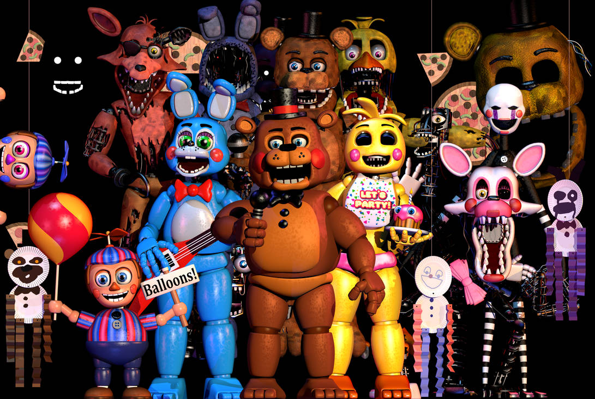
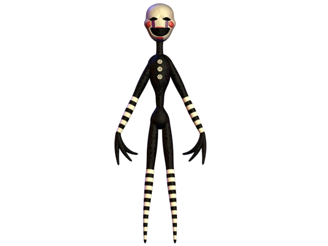

Five Nights at Freddy´s 2 foi lançado em 11 de novembro de 2014, um dia antes do previsto devido a problemas com a liberação da demo, pois a ideia era lançar em 2015. Em FNaF 2 seu objetivo é o mesmo do jogo anterior, você é um guarda noturno e deve vigiar a pizzaria das 00:00 (12:00 AM) às 06:00 (06:00 AM) sem ser pego pelos animatronics. Porem agora há três entradas para sua sala e você não tem portas, mas não fique triste, você ganhou uma mascara!
Gameplay
O jogador está sentado em seu escritório e precisa vigiar as câmeras de segurança que estão espalhadas pela pizzaria. O jogador tem uma quantidade limitada de bateria em sua lanterna. Aqui não existe portas, deve-se sempre estar atento aos seus arredores, e nunca se esqueça de recarregar a caixinha de música.
O jogador deve olhar as câmeras de segurança do local, usar a máscara de Freddy para enganar os animatrônicos, e recarregar a caixinha de música. Se o jogador falhar, o animatrônico dará um jumpscare e matará o jogador. Para avançar para a próxima noite, o jogador deve sobreviver da 00:00 (12:00 AM) até às 06:00 (6:00 AM), que são 7 minutos e 6 segundos em tempo real. em caso de você não recarregar a caixinha de musica uma animatronic chamada Puppet saira da caixa e ira te matar e não adianta botar a mascara.
Animatronic
Grupo principal e Grupo dos quebrado
A maioria dos animatronics nesse jogo são evitados pela mascara porem temos algumas exação como Foxy, Mangle, Puppet e Golden Freddy. ou seja quando um animatronic aparecer perto da sua sala bota a mascara.
Foxy: Pisque a lanterna de tempos em tempos. Mangle: Pisque a lanterna de tempos em tempos e caso ela esteja no seu escritorio coloque a mascara. Golden Freddy: É evitado igual no jogo anterior, quando ele apareçer abra e feche as cameras.
Puppet
Puppet a primeira a morrer, esta la desde de o inicio. Para evitar a puppet basta ficar dando corda (ou recarregar) a caixinha de musica para que ela não saia da caixa! Mascara não funciona com ela, pelo que sabemos junto com Golden Freddy ela esteve em fnaf 1 aparecendo em um dos minigames de fnaf 2.